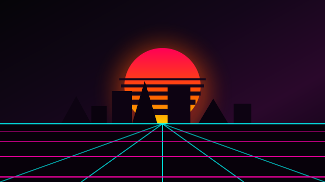

1080p HD ♫ MÚSICA • VÍDEO 02:15 / 03:40MIDNIGHT DRIVE (CLIPE OFICIAL)
Retro Cyberwave • Álbum: Neon Horizon • 1.4M visualizações
A SEGUIR • FILA DE REPRODUÇÃO
Role a tela para baixo para navegar pela fila e testar o cabeçalho sticky e o miniplayer fixo.
Neon Lights Horizon
Retro Cyberwave • 03:52
Synthwave Nights
Sunset Dreamers • 04:10
Midnight Highway Cruise
Voltage Pulse • 03:28
Cyber City Rain
Lo-Fi Neon • 02:45
After Hours Drive
The Velocity Squad • 04:30